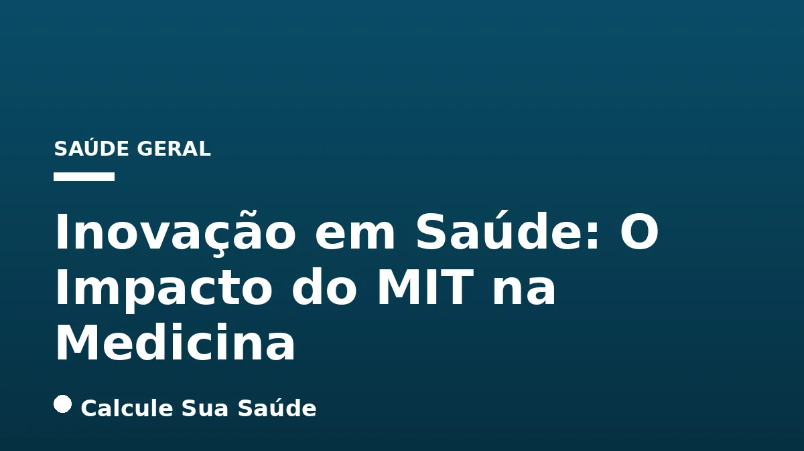

Aviso médico importante
Este conteúdo é educativo e informativo e não substitui a consulta, o diagnóstico ou o tratamento de um profissional de saúde. Em caso de sintomas, procure orientação médica.
Índice do Artigo
- 1. O Que é "Saúde Mit"? Desmistificando o Conceito
- 2. O MIT como Epicentro de Inovação e Pesquisa em Saúde
- 3. A Abordagem Interdisciplinar: O Programa Harvard-MIT Health Sciences and Technology (HST)
- 4. Saúde Digital e Inteligência Artificial: Redefinindo o Futuro da Medicina
- 5. Monitoramento de Saúde Sem Fio: Além das Câmeras e Wearables
- 6. A Revolução das Pílulas Inteligentes na Adesão a Tratamentos
- 7. Detecção Precoce de Câncer de Mama: Inovação no Dia a Dia
- 8. Sensores Microscópicos e Biomarcadores: Monitoramento Contínuo e Personalizado
- 9. Inteligência Artificial na Otimização da Gestão e Cuidados em Saúde
- 10. Mitos e Realidades: Esclarecendo Equívocos sobre "Saúde Mit"
- 11. O Engajamento do MIT com o Brasil: Iniciativas e Colaborações
- 12. Avaliação de Tecnologias em Saúde (ATS) no Brasil: Um Modelo em Evolução
- 13. Superando a Escassez de Profissionais de Saúde com Tecnologia
- 14. Tabela: Principais Inovações do MIT na Saúde e Seu Impacto
- 15. O Futuro da Saúde: Prevenção, Diagnóstico e Tratamento Impulsionados pelo MIT
- 16. A Importância da Evidência Científica na Era da Inovação
- 17. Perguntas frequentes
No cenário global da saúde, a inovação e a pesquisa científica são pilares fundamentais para o avanço da medicina e a melhoria da qualidade de vida. Dentro desse contexto, o Massachusetts Institute of Technology (MIT) emerge como um dos principais catalisadores de progresso, com suas contribuições impactando profundamente diversas áreas do setor. O que se convencionou chamar de 'Saúde Mit' não é uma condição médica ou uma doença, mas sim o vasto e influente conjunto de iniciativas, descobertas e tecnologias desenvolvidas por esta renomada instituição.
Desde a criação de dispositivos de monitoramento de saúde sem fio até o desenvolvimento de pílulas inteligentes para aumentar a adesão a tratamentos e a aplicação de inteligência artificial para otimizar diagnósticos, o MIT tem se posicionado na vanguarda da transformação. Este artigo aprofundará as múltiplas facetas da 'Saúde Mit', explorando como a pesquisa interdisciplinar e a inovação tecnológica estão moldando um futuro mais eficiente, personalizado e acessível para a saúde humana, com um olhar especial para o engajamento com o Brasil.
Com um compromisso inabalável com a excelência acadêmica e a aplicação prática do conhecimento, o MIT não apenas forma a próxima geração de cientistas e engenheiros, mas também incuba startups e desenvolve soluções que prometem redefinir a prática clínica e a gestão da saúde em escala global. Compreender a 'Saúde Mit' é mergulhar nas tendências e avanços que estão pavimentando o caminho para uma nova era na medicina, sempre com o rigor científico que o portal Calcule Sua Saúde preza.
Em resumo
- "Saúde Mit" refere-se às inovações e pesquisas do Massachusetts Institute of Technology (MIT) no campo da saúde, não a uma condição médica.
- O MIT é um centro de excelência em pesquisa interdisciplinar, com programas como o Harvard-MIT Health Sciences and Technology (HST), que formam líderes em ciência e engenharia clínica.
- A instituição é pioneira em tecnologias de saúde digital e inteligência artificial, buscando otimizar a gestão de dados, personalizar cuidados e tornar a saúde mais eficiente e acessível.
- Dentre as inovações destacam-se sistemas de monitoramento de saúde sem fio, pílulas inteligentes para adesão a tratamentos, dispositivos de detecção precoce de câncer (como o sutiã com ultrassom) e sensores microscópicos para biomarcadores.
- O MIT mantém um engajamento ativo com o Brasil, por meio de iniciativas como o MIT Hacking Medicine e discussões sobre Avaliação de Tecnologias em Saúde (ATS) e a superação da escassez de profissionais.
- As contribuições do MIT visam desenvolver ferramentas baseadas em evidências para prevenção, diagnóstico precoce e otimização de tratamentos, combatendo a desinformação e promovendo soluções científicas para desafios reais da saúde global.
1. O Que é "Saúde Mit"? Desmistificando o Conceito
O termo "Saúde Mit" frequentemente gera curiosidade e, por vezes, equívocos. É fundamental esclarecer que não se trata de uma condição médica, doença, tratamento específico ou sigla para alguma patologia. Em vez disso, "Saúde Mit" é uma expressão que encapsula o vasto e profundo impacto do Massachusetts Institute of Technology (MIT) no campo da saúde global. O MIT, uma das instituições de pesquisa e ensino mais prestigiadas do mundo, é um motor de inovação que transcende fronteiras disciplinares, aplicando sua expertise em ciência, engenharia e tecnologia para resolver alguns dos desafios mais prementes da medicina.
A compreensão de "Saúde Mit" envolve reconhecer o papel do Instituto como um berço de pesquisa de ponta, desenvolvimento tecnológico e formação de talentos que estão moldando o futuro da saúde. Suas contribuições abrangem desde a criação de novos dispositivos médicos e terapias até o avanço da saúde digital e a aplicação da inteligência artificial em contextos clínicos e de gestão. É uma visão holística que integra diversas áreas do conhecimento para promover o bem-estar humano, sempre com o rigor científico e a busca por evidências que caracterizam a instituição.
2. O MIT como Epicentro de Inovação e Pesquisa em Saúde
O Massachusetts Institute of Technology é reconhecido mundialmente como um polo de inovação, e sua influência no setor da saúde é particularmente notável. A universidade atua como um poderoso centro de pesquisa, abrigando inúmeros laboratórios e centros dedicados à inteligência artificial, engenharia biomédica, biotecnologia e pesquisa médica. Essa estrutura permite que estudantes e pesquisadores colaborem em projetos de vanguarda, transformando descobertas científicas em soluções práticas.
A cultura do MIT fomenta a criação de startups e o desenvolvimento de novas tecnologias. Programas de aceleração e incubadoras dentro da instituição apoiam empreendedores na tradução de ideias inovadoras em empresas viáveis, que frequentemente introduzem disrupções significativas no mercado de saúde. Esse ecossistema vibrante é crucial para que as inovações "Saúde Mit" não permaneçam apenas no âmbito acadêmico, mas alcancem pacientes e sistemas de saúde em todo o mundo, impulsionando avanços que impactam diretamente a prevenção, o diagnóstico e o tratamento de doenças.
3. A Abordagem Interdisciplinar: O Programa Harvard-MIT Health Sciences and Technology (HST)
Um dos exemplos mais proeminentes da abordagem interdisciplinar do MIT na saúde é o programa Harvard-MIT Health Sciences and Technology (HST). Esta colaboração única entre duas das mais renomadas instituições acadêmicas do mundo visa capacitar a próxima geração de cientistas e engenheiros clínicos. O HST é projetado para integrar profundamente a ciência básica, a engenharia e a medicina, permitindo que os alunos compreendam os desafios clínicos e desenvolvam soluções tecnológicas e científicas para eles.
O foco do programa é a tradução de descobertas de pesquisa em prática clínica, com o objetivo final de melhorar a saúde humana. Ao reunir conhecimentos de biologia, física, engenharia, ciência da computação e medicina, o HST promove uma visão holística e inovadora. Essa sinergia é fundamental para abordar problemas complexos da saúde que não podem ser resolvidos por uma única disciplina, exemplificando a essência da "Saúde Mit" na busca por soluções integradas e eficazes.
4. Saúde Digital e Inteligência Artificial: Redefinindo o Futuro da Medicina
A "Saúde Mit" está na vanguarda da revolução da saúde digital e da inteligência artificial (IA). O MIT explora ativamente como a IA pode criar um futuro mais eficiente e personalizado para a medicina. A instituição aborda a IA não como uma substituta para os profissionais de saúde, mas como uma ferramenta poderosa que libera o potencial de médicos e enfermeiros, otimizando processos e oferecendo suporte à decisão clínica.
A disrupção tecnológica impulsionada pela IA na gestão inteligente da saúde é um foco central. Isso inclui o uso de algoritmos avançados para analisar grandes volumes de dados médicos, identificar padrões, prever riscos de doenças e personalizar planos de tratamento. A IA tem o potencial de transformar desde o agendamento de consultas e a gestão de prontuários eletrônicos até a descoberta de novos medicamentos e a otimização de fluxos de trabalho em hospitais, tornando os sistemas de saúde mais responsivos e eficientes.
5. Monitoramento de Saúde Sem Fio: Além das Câmeras e Wearables
Uma das inovações mais notáveis da "Saúde Mit" é o desenvolvimento de um sistema de monitoramento de saúde sem fio que opera sem a necessidade de câmeras ou dispositivos vestíveis. Pesquisadores do MIT criaram um dispositivo que utiliza ondas de rádio, de forma semelhante a um roteador Wi-Fi, para monitorar discretamente parâmetros vitais e comportamentais. Este sistema é capaz de acompanhar a qualidade do sono, os batimentos cardíacos, a frequência respiratória e até mesmo a postura durante a caminhada, tudo isso a partir da casa do paciente.
A tecnologia oferece um potencial imenso para diagnósticos futuros e alertas urgentes, especialmente para condições que exigem monitoramento contínuo. Ele tem sido utilizado tanto por indivíduos saudáveis interessados em otimizar seu bem-estar quanto por pacientes com condições crônicas, como Parkinson, depressão e doenças pulmonares. A capacidade de coletar dados de saúde de forma não invasiva e contínua representa um avanço significativo, podendo auxiliar na detecção precoce de problemas e no ajuste de tratamentos. Por exemplo, a análise do padrão respiratório durante o sono pode fornecer insights valiosos para o diagnóstico e manejo de condições como a Apneia do Sono: Sintomas, Diagnóstico e CPAP.
6. A Revolução das Pílulas Inteligentes na Adesão a Tratamentos
A falta de adesão a tratamentos médicos é um problema global que resulta em centenas de milhares de mortes evitáveis anualmente e bilhões em custos de saúde. Para enfrentar esse desafio, engenheiros do MIT desenvolveram uma "pílula inteligente" inovadora. Esta pílula é capaz de enviar um sinal sem fio confirmando o momento exato em que foi ingerida, oferecendo uma solução tecnológica para monitorar a conformidade com a medicação.
A tecnologia consiste em uma pílula contendo uma pequena antena de zinco e celulose que se comunica com um chip de radiofrequência (RFID) externo. Após a ingestão, em cerca de 10 minutos, a pílula envia um sinal para um leitor externo, que pode ser um dispositivo vestível ou um celular. Os componentes da pílula se dissolvem no estômago em aproximadamente uma semana, e o chip não biodegradável é expelido naturalmente. Essa inovação da "Saúde Mit" representa um passo crucial para melhorar a eficácia dos tratamentos, garantindo que os pacientes recebam a medicação conforme prescrito e permitindo que os profissionais de saúde monitorem a adesão de forma objetiva.
7. Detecção Precoce de Câncer de Mama: Inovação no Dia a Dia
A detecção precoce do câncer é um dos pilares para o sucesso do tratamento e a melhoria das taxas de sobrevivência. Na "Saúde Mit", cientistas do MIT desenvolveram um scanner de ultrassom projetado para ser incorporado diretamente no sutiã, oferecendo uma abordagem inovadora para a identificação do câncer de mama. Este dispositivo permite um monitoramento mais frequente e conveniente, especialmente para pacientes com alto risco de desenvolver a doença.
A capacidade de realizar exames de ultrassom com resolução comparável às sondas médicas tradicionais, de forma contínua e no conforto do lar, pode transformar a maneira como o câncer de mama é rastreado. Para mulheres com histórico familiar, mutações genéticas ou outras condições que aumentam o risco, este tipo de monitoramento pode significar a diferença entre a detecção em estágios avançados e a identificação precoce, quando as opções de tratamento são mais eficazes. Esta tecnologia complementa as diretrizes existentes para a Câncer de Mama: Prevenção, Sinais e Mamografia, oferecendo uma ferramenta adicional para vigilância.
8. Sensores Microscópicos e Biomarcadores: Monitoramento Contínuo e Personalizado
A "Saúde Mit" também está explorando o potencial dos sensores microscópicos para o monitoramento contínuo da saúde. Pesquisadores do MIT estão desenvolvendo tecnologias capazes de analisar biomarcadores presentes em fluidos corporais, como as lágrimas humanas. Essa abordagem inovadora visa fornecer dados em tempo real sobre o estado de saúde de um paciente, permitindo uma intervenção mais rápida e personalizada.
A capacidade de monitorar continuamente biomarcadores pode revolucionar o manejo de doenças crônicas e agudas. Por exemplo, alterações nos níveis de certos biomarcadores podem indicar inflamação, estresse metabólico ou a progressão de uma doença, como as que afetam o Colesterol e Triglicerídeos: Guia Completo. Com esses dados em mãos, os sistemas de saúde poderiam ajustar tratamentos automaticamente, alertar pacientes e médicos sobre mudanças significativas e otimizar a eficácia das intervenções. Essa tecnologia representa um passo em direção à medicina preditiva e preventiva, onde a saúde é gerenciada de forma proativa e baseada em dados individualizados.
9. Inteligência Artificial na Otimização da Gestão e Cuidados em Saúde
A inteligência artificial (IA) é uma pedra angular da "Saúde Mit" para otimizar a gestão e os cuidados em saúde. O MIT tem demonstrado como a IA pode ser aplicada para gerenciar grandes volumes de dados clínicos e administrativos, prever resultados de saúde e personalizar planos de tratamento de forma sem precedentes. O objetivo é tornar os sistemas de saúde mais eficientes, acessíveis e equitativos.
A IA pode auxiliar na identificação de pacientes em risco, na otimização da alocação de recursos hospitalares, na melhoria da precisão diagnóstica e no desenvolvimento de terapias mais eficazes. Além disso, a IA pode personalizar a experiência do paciente, oferecendo recomendações de saúde adaptadas e suporte contínuo. Ao automatizar tarefas rotineiras e fornecer insights baseados em dados, a IA permite que os profissionais de saúde dediquem mais tempo ao cuidado direto do paciente, elevando a qualidade e a humanização dos serviços de saúde.
10. Mitos e Realidades: Esclarecendo Equívocos sobre "Saúde Mit"
Dada a natureza inovadora e por vezes futurista das contribuições do MIT para a saúde, é natural que surjam questionamentos e, ocasionalmente, equívocos. Um "mito comum" sobre "Saúde Mit" poderia ser a ideia de que "MIT" é uma sigla para uma doença nova, um tratamento milagroso ou uma cura universal. É crucial reiterar que MIT é o acrônimo para Massachusetts Institute of Technology, uma instituição acadêmica e de pesquisa.
A realidade é que a "Saúde Mit" representa o compromisso contínuo do Instituto em aplicar o rigor científico e a engenharia avançada para desenvolver soluções baseadas em evidências para desafios reais da saúde global. Não se trata de promessas sensacionalistas ou curas instantâneas, mas sim de avanços incrementais e disruptivos que são submetidos a testes rigorosos e validação científica. A ciência, por meio das pesquisas do MIT, busca soluções tangíveis e inovadoras que transformam a medicina de forma sustentável e ética, sempre com foco na melhoria da saúde humana e na prevenção de doenças.
11. O Engajamento do MIT com o Brasil: Iniciativas e Colaborações
A influência da "Saúde Mit" não se restringe aos Estados Unidos. O MIT tem um engajamento ativo e crescente com o Brasil na área da saúde, buscando fomentar a inovação e o empreendedorismo. Um exemplo notável é a MIT Hacking Medicine Initiative, liderada pelo professor Zen Chu. Este programa global reúne profissionais de saúde, engenheiros, empreendedores e estudantes para desenvolver soluções inovadoras para problemas cotidianos da saúde.
O professor Zen Chu visitou o Brasil para promover essa iniciativa, que já envolveu mais de 10 mil pessoas em 35 países e tem sido um catalisador para a criação de startups que atraíram bilhões de dólares em investimentos. Essa colaboração visa não apenas transferir conhecimento e tecnologia, mas também estimular o ecossistema de inovação em saúde no Brasil, capacitando talentos locais a criar suas próprias soluções e a enfrentar os desafios específicos do sistema de saúde brasileiro.
12. Avaliação de Tecnologias em Saúde (ATS) no Brasil: Um Modelo em Evolução
A "Saúde Mit" também se manifesta na discussão sobre a Avaliação de Tecnologias em Saúde (ATS) no Brasil. A MIT Technology Review tem destacado o avanço do país nesse campo, ressaltando a importância da Conitec (Comissão Nacional de Incorporação de Tecnologias no SUS) no processo de validação e incorporação de novos medicamentos, terapias e ferramentas diagnósticas no Sistema Único de Saúde (SUS). O Brasil é considerado um modelo para a América Latina em seu processo de ATS, demonstrando um compromisso com a incorporação de inovações baseadas em evidências.
Apesar dos progressos, a "Saúde Mit" e especialistas apontam que o Brasil ainda pode evoluir em comparação com agências internacionais como o National Institute for Health and Care Excellence (NICE) do Reino Unido, especialmente em termos de agilidade e abrangência. A colaboração e o intercâmbio de conhecimentos com instituições como o MIT podem acelerar essa evolução, garantindo que as inovações cheguem aos pacientes de forma eficiente e segura, sempre com a devida análise de custo-efetividade e impacto na saúde pública.
13. Superando a Escassez de Profissionais de Saúde com Tecnologia
Um dos desafios globais mais prementes na saúde é a escassez de profissionais, incluindo médicos e enfermeiros. O professor Zen Chu, diretor da Hacking Medicine Initiative do MIT, enfatiza que o Brasil, assim como os EUA e a Indonésia, enfrenta essa realidade. Em sua visão, a tecnologia não é apenas uma ferramenta de otimização, mas a única forma viável de reduzir custos, ampliar a qualidade e, crucialmente, expandir o acesso à saúde em larga escala.
As inovações da "Saúde Mit", como o monitoramento remoto e a IA, podem desempenhar um papel fundamental na mitigação dessa escassez. Ao automatizar tarefas, otimizar diagnósticos e permitir o acompanhamento de pacientes à distância, a tecnologia pode desafogar os sistemas de saúde e permitir que os profissionais existentes atuem de forma mais estratégica e eficiente. Isso é particularmente relevante para o acesso a cuidados em saúde mental, onde a tecnologia pode ampliar o alcance de terapias e suporte para condições como a Ansiedade: Sintomas e Quando Procurar Ajuda e a Depressão: Sintomas, Causas, Tipos e Tratamentos, que muitas vezes sofrem com a falta de especialistas.
14. Tabela: Principais Inovações do MIT na Saúde e Seu Impacto
| Área de Inovação | Tecnologia/Iniciativa | Impacto Potencial |
|---|---|---|
| Monitoramento Contínuo | Sistema de Monitoramento Sem Fio (ondas de rádio) | Detecção precoce de alterações em sono, batimentos, respiração e postura; acompanhamento de doenças crônicas (Parkinson, depressão). |
| Adesão a Tratamentos | Pílulas Inteligentes com RFID | Redução de mortes evitáveis por não adesão; monitoramento objetivo da ingestão de medicamentos. |
| Diagnóstico Precoce | Scanner de Ultrassom em Sutiã | Monitoramento frequente e conveniente para detecção precoce de câncer de mama em pacientes de alto risco. |
| Biomonitoramento | Sensores Microscópicos para Lágrimas | Monitoramento contínuo de biomarcadores em tempo real; ajuste automático de tratamentos. |
| Gestão e Personalização | Inteligência Artificial (IA) na Saúde | Otimização da gestão de dados, previsão de resultados, personalização de cuidados, aumento da eficiência e acessibilidade. |
15. O Futuro da Saúde: Prevenção, Diagnóstico e Tratamento Impulsionados pelo MIT
A "Saúde Mit" aponta para um futuro da medicina onde a prevenção, o diagnóstico e o tratamento são cada vez mais personalizados, preditivos e proativos. As inovações desenvolvidas no MIT estão pavimentando o caminho para um modelo de saúde que se afasta da reatividade para abraçar uma abordagem mais integrada e tecnologicamente avançada. A capacidade de monitorar a saúde de forma contínua e não invasiva, de garantir a adesão a tratamentos e de detectar doenças em seus estágios mais iniciais promete transformar radicalmente a experiência do paciente e a prática clínica.
A integração da inteligência artificial e da saúde digital permite uma gestão de dados sem precedentes, oferecendo aos profissionais de saúde ferramentas poderosas para tomar decisões mais informadas e eficazes. O compromisso do MIT com a pesquisa interdisciplinar e a colaboração global, incluindo o Brasil, garante que essas inovações não sejam apenas tecnologicamente avançadas, mas também relevantes e aplicáveis aos desafios de saúde em diversas realidades. A "Saúde Mit" é, portanto, um farol para o que a ciência e a tecnologia podem alcançar quando dedicadas à melhoria da vida humana.
16. A Importância da Evidência Científica na Era da Inovação
Em um cenário de rápidas inovações e avanços tecnológicos, a "Saúde Mit" reforça a importância inegável da evidência científica como pilar fundamental. No portal Calcule Sua Saúde, nosso compromisso é fornecer informações baseadas em dados robustos e pesquisas validadas, um princípio que se alinha perfeitamente com a metodologia rigorosa empregada pelo MIT. Cada nova tecnologia, cada descoberta e cada aplicação na saúde devem ser submetidas a um escrutínio científico rigoroso para garantir sua segurança, eficácia e relevância clínica.
A inovação, por mais promissora que seja, só se torna verdadeiramente valiosa quando respaldada por evidências sólidas. É por isso que enfatizamos que o conteúdo aqui apresentado tem caráter educativo e informativo, não substituindo a avaliação e o acompanhamento de um profissional de saúde qualificado. A "Saúde Mit" é um testemunho de como a ciência e a tecnologia, quando aplicadas com responsabilidade e ética, podem impulsionar avanços que transformam positivamente a saúde de milhões de pessoas em todo o mundo.
17. Perguntas frequentes
O que significa o termo "Saúde Mit"?
O termo "Saúde Mit" não se refere a uma doença ou condição médica. Ele designa o conjunto de iniciativas, pesquisas e avanços tecnológicos na área da saúde desenvolvidos ou promovidos pelo Massachusetts Institute of Technology (MIT), uma renomada universidade de pesquisa nos Estados Unidos.
O MIT desenvolve tratamentos médicos diretamente?
O MIT foca principalmente na pesquisa e no desenvolvimento de tecnologias e abordagens inovadoras que podem levar a novos diagnósticos, métodos de prevenção e otimização de tratamentos. Embora não desenvolva tratamentos clínicos diretos, suas inovações são a base para futuras terapias e ferramentas médicas.
Como a inteligência artificial do MIT impacta a saúde?
A inteligência artificial (IA) desenvolvida no MIT está revolucionando a saúde ao otimizar a gestão de dados, prever resultados de saúde, personalizar cuidados e aumentar a eficiência dos sistemas. A IA atua como uma ferramenta para liberar o potencial dos médicos, não para substituí-los.
As pílulas inteligentes do MIT são seguras?
As pílulas inteligentes desenvolvidas pelo MIT são projetadas para serem seguras. Elas contêm componentes que se dissolvem no estômago em cerca de uma semana, e o chip não biodegradável é expelido naturalmente. O objetivo é monitorar a adesão a tratamentos de forma segura e eficaz.
O sistema de monitoramento de saúde sem fio do MIT pode substituir um médico?
Não, o sistema de monitoramento de saúde sem fio do MIT é uma ferramenta complementar. Ele fornece dados valiosos sobre sono, batimentos cardíacos, respiração e postura, que podem auxiliar médicos no diagnóstico e acompanhamento, mas não substitui a avaliação clínica e o julgamento profissional.
O MIT tem projetos ou colaborações na área da saúde no Brasil?
Sim, o MIT tem engajamento com o Brasil na área da saúde. A MIT Hacking Medicine Initiative, por exemplo, já visitou o país para fomentar o desenvolvimento de soluções inovadoras. Além disso, a MIT Technology Review discute o avanço da Avaliação de Tecnologias em Saúde (ATS) no Brasil.
O que é o programa Harvard-MIT Health Sciences and Technology (HST)?
O HST é um programa colaborativo entre Harvard e MIT que visa capacitar cientistas e engenheiros clínicos. Ele integra ciência básica, engenharia e medicina para traduzir descobertas de pesquisa em prática clínica, melhorando a saúde humana através de uma abordagem interdisciplinar.
As inovações do MIT são acessíveis ao público geral?
Muitas das inovações do MIT estão em estágios de pesquisa e desenvolvimento. Algumas tecnologias já foram licenciadas para startups ou grandes empresas e, eventualmente, chegam ao mercado. A acessibilidade depende de fatores como aprovação regulatória, custo de produção e políticas de saúde, mas o objetivo é que impactem a saúde globalmente.
Leia também
Referências e Fontes
1. MIT Health. Disponível em: health.mit.edu
2. Harvard-MIT Health Sciences and Technology. Disponível em: hst.mit.edu
3. Estadão. Sem utilizar câmeras, MIT desenvolve sistema de monitoramento de saúde. Disponível em: estadao.com.br
4. Exame. Brasil não tem nada a aprender com os EUA em saúde, diz professor do MIT. Disponível em: exame.com
5. Correio Braziliense. Sistema desenvolvido no MIT faz acompanhamento médico por wi-fi. Disponível em: correiobraziliense.com.br
6. MIT Sloan Management Review Brasil. Saúde inteligente: IA na prática - Resultados. Disponível em: mitsloanreview.com.br
7. Xataka Brasil. Se você sempre esquece de tomar remédio, o MIT tem a solução definitiva: a tecnologia que transforma pílula em notificação. Disponível em: xataka.com.br
8. MIT Technology Review. Avaliação de Tecnologias em Saúde avança no Brasil. Disponível em: mittechreview.com.br
9. Wikipédia. Instituto de Tecnologia de Massachusetts. Disponível em: pt.wikipedia.org